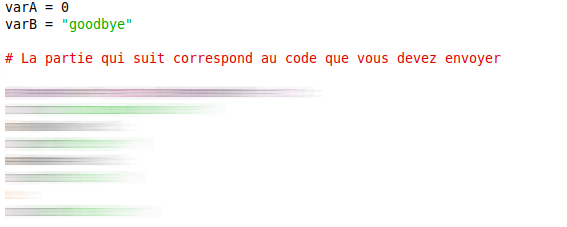

On suppose que l'on a deux variables : varA et varB.
Ces variables ont chacune une valeur (soit un nombre, soit une chaîne de caractères).
Ecrire un bout de code qui imprime l'un des messages suivants :
"string involved" si soit varA, soit varB est une chaîne de caractères."bigger" si varA est plus grande que varB."equal" si varA est égale à varB."smaller" si varA est plus petite que varB.Pour ce problème, votre réponse ne devra pas utiliser la commande input et ne pas définir les variables varA et varB.
Le test automatique fournira des valeurs pour varA et varB.
Par exemple :
Voici le résultat, en console, après exécution du fichier.
Il faut donc ecrire votre portion de code dans un fichier.
L'enregistrer sous la forme prenom_nom_tpProg.py et l'envoyer par courriel.